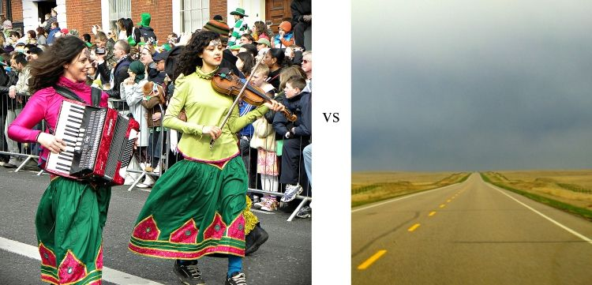
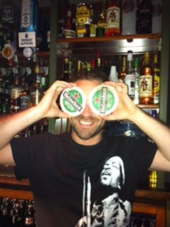
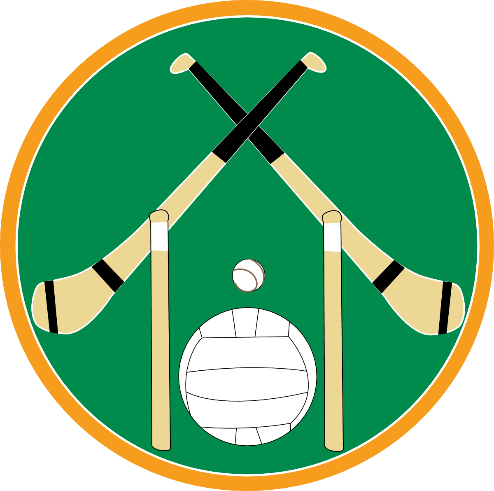

Compared to Nebraska, a city of over a million people, Cork actually has fun-wise more to offer.

Hmmmm.. Which is more fun?
What the hell is Craic?
There is an idea in Ireland that does not really exist in America: Craic
Craic is a state of mind, hard to directly translate into "fun".

An Irish guy having the craic
It is more of an overall assessment of a night out or an event. That feeling that you have after having a truly great time.
Sports: a bit different..
Irish sports are basically summed up in football and hurling
To an American, Irish sports are weird. I guess hurling is like Lacrosse without a net, and football is a combination of American football, basketball and maybe a touch of soccer.

What are the stick-like things on this?
Why can't they just play normal sports, like baseball?
Travel: It's not just Florida any more..
Now when I want to go on holiday (vacation for the yanks) we head to Europe.
It's odd to go to the beach and not be able to order beer.
I now get told to put on tight shorts to get into the pool.
A video of my favourite "camping" site. More like a resort.
It turns out that this resort is half nude. Our first day, we took a wrong turn and even the receptionist was buck naked! Gotta love Europe.